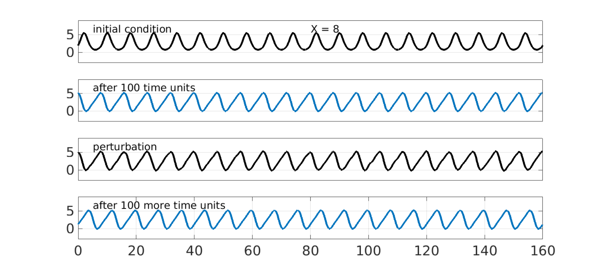
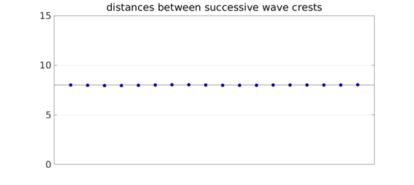
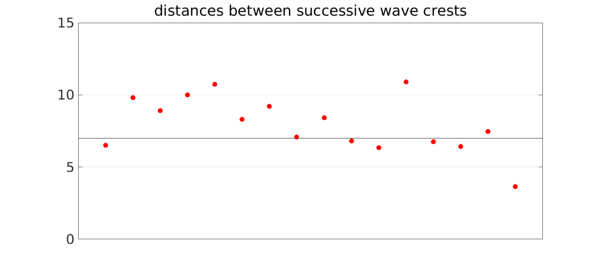
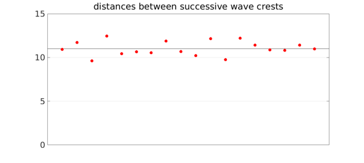

1. Standard KS equation
The Kuramoto-Sivashinsky equation, $$ u_t = -(u^2/2)_x - u_{xx} - u_{xxxx} , $$ is famous for its chaotic solutions. One of them is illustrated by Chebfun's built-in demo, which uses these parameters:
S = spinop('ks')
S =
spinop with properties:
domain: [0 1.005309649148734e+02]
init: [Inf×1 chebfun]
lin: @(u)-diff(u,2)-diff(u,4)
nonlin: @(u)-.5*diff(u.^2)
tspan: [0 300]
numVars: 1
The KS equation also has traveling wave solutions, however, and some of them are stable. A recent contribution in this area is by Blake Barker and coauthors [1]. For example, suppose we look for a solution with period $X=8$ on a domain of length $20X$. In the figure below, the first panel shows the the initial condition $U(x) = 2\exp(\sin(2\pi x/X)).$ The second panel shows the traveling wave that results after 100 time units. The third panel shows the latter function perturbed by a random function. Finally we run for 100 more time units from this perturbed state, and find that the regular wave form is restored.
S.tspan = [0 100]; npts = 256; dt = 0.02; LW = 'linewidth'; lw = 4; CO = 'color'; MS = 'markersize'; ms = 32; FS = 'fontsize'; fs = 26; XT = 'xtick'; YT = 'ytick'; X = 8; S.domain = [0 20*X]; S.init = chebfun(@(x) 2*exp(sin(2*pi*x/X)),S.domain); subplot(4,1,1), plot(S.init,'k',LW,lw), ylim([-3 9]), grid on text(5,6.6,'initial condition',FS,fs), set(gca,XT,[],YT,[0 5]) text(10*X,6.6,['X = ' num2str(X)],FS,fs) u = spin(S,npts,dt,'plot','off'); subplot(4,1,2), plot(u,LW,lw), ylim([-3 9]), grid on text(5,6.6,'after 100 time units',FS,fs), set(gca,XT,[],YT,[0 5]) S.init = u + .1*randnfun(2,S.domain); subplot(4,1,3), plot(S.init,'k',LW,lw), ylim([-3 9]), grid on text(5,6.6,'perturbation',FS,fs), set(gca,XT,[],YT,[0 5]) u = spin(S,npts,dt,'plot','off'); subplot(4,1,4), plot(u,LW,lw), ylim([-3 9]), grid on text(5,6.6,'after 100 more time units',FS,fs), set(gca,YT,[0 5])

To see the regularity of the wave, we can plot the distances from each local maximum to the next. They are not perfectly constant, but the variation is small.
format short, format compact
[a,b] = max(u,'local'); d = diff(b)';
clf, plot([0 length(d)-1],X*[1 1],'k',LW,.7), hold on
plot(d(2:end-1),'.',MS,ms,CO,[0 0 .6]), set(gca,XT,[])
grid on, axis([0 length(d)-1 0 15]), hold off
title('distances between successive wave crests')

By contrast, let's try the same experiment but with an initial wave of period $X = 7$. Again in 100 time units we settle down to a traveling wave. This time, however, the perturbation excites an instability, and we end with an apparently chaotic waveform.
X = 7; S.domain = [0 20*X]; S.init = chebfun(@(x) 2*exp(sin(2*pi*x/X)),S.domain); subplot(4,1,1), plot(S.init,'k',LW,lw), ylim([-3 9]), grid on text(5,6.6,'initial condition',FS,fs), set(gca,XT,[],YT,[0 5]) text(10*X,6.6,['X = ' num2str(X)],FS,fs) u = spin(S,npts,dt,'plot','off'); subplot(4,1,2), plot(u,LW,lw), ylim([-3 9]), grid on text(5,6.6,'after 100 time units',FS,fs), set(gca,XT,[],YT,[0 5]) S.init = u + .1*randnfun(2,S.domain); subplot(4,1,3), plot(S.init,'k',LW,lw), ylim([-3 9]), grid on text(5,6.6,'perturbation',FS,fs), set(gca,XT,[],YT,[0 5]) u = spin(S,npts,dt,'plot','off'); subplot(4,1,4), plot(u,'r',LW,lw), ylim([-3 9]), grid on text(5,6.6,'after 100 more time units',FS,fs), set(gca,YT,[0 5])
The distances between wave crests vary greatly.
[a,b] = max(u,'local'); d = diff(b)';
clf, plot([0 length(d)-1],X*[1 1],'k',LW,.7), hold on
plot(d(2:end-1),'.r',MS,ms), set(gca,XT,[])
grid on, axis([0 length(d)-1 0 15]), hold off
title('distances between successive wave crests')

2. Generalized KS equation
This much had been done by earlier authors. The emphasis of [1] is actually on the generalized KS equation, $$ u_t = -(u^2/2)_x - \delta(u_{xx} - u_{xxxx}) - \varepsilon u_{xxx}, $$ where $\delta$ and $\varepsilon$ are nonnegative diffusion and dispersion constants, respectively. Again, stable traveling waves may occur. Here for $\delta=0.8$ and $\varepsilon = 0.6$ we find a stable wave with wavelength $X=10$.
X = 10; S.domain = [0 20*X]; delta = 0.8; ep = 0.6; S.lin = @(u) delta*(-diff(u,2)-diff(u,4)) - ep*diff(u,3); S.init = chebfun(@(x) 2*exp(sin(2*pi*x/X)),S.domain); subplot(4,1,1), plot(S.init,'k',LW,lw), ylim([-3 9]), grid on text(5,7.2,'initial condition',FS,fs), set(gca,XT,[],YT,[0 5]) text(10*X,7.2,['X = ' num2str(X)],FS,fs) u = spin(S,npts,dt,'plot','off'); subplot(4,1,2), plot(u,LW,lw), ylim([-3 9]), grid on text(5,7.2,'after 100 time units',FS,fs), set(gca,XT,[],YT,[0 5]) S.init = u + .1*randnfun(2,S.domain); subplot(4,1,3), plot(S.init,'k',LW,lw), ylim([-3 9]), grid on text(5,7.2,'perturbation',FS,fs), set(gca,XT,[]) u = spin(S,npts,dt,'plot','off'); subplot(4,1,4), plot(u,LW,lw), ylim([-3 9]), grid on text(5,7.2,'after 100 more time units',FS,fs), set(gca,YT,[0 5])
The distances between wave crests are reasonably uniform again.
[a,b] = max(u,'local'); d = diff(b)';
clf, plot([0 length(d)-1],X*[1 1],'k',LW,.7), hold on
plot(d(2:end-1),'.',MS,ms,CO,[0 0 .6]), set(gca,XT,[])
grid on, axis([0 length(d)-1 0 15]), hold off
title('distances between successive wave crests')
On the other hand let's change $X$ to $11$ (we've picked this number by looking at Figure 6a in [1]). Again the final curve is no longer periodic, though one has to look a bit more closely to see this. Note the irregular gaps between the local maxima.
X = 11; S.domain = [0 20*X]; S.init = chebfun(@(x) 2*exp(sin(2*pi*x/X)),S.domain); subplot(4,1,1), plot(S.init,'k',LW,lw), ylim([-3 9]), grid on text(5,7.2,'initial condition',FS,fs), set(gca,XT,[],YT,[0 5]) text(10*X,7.2,['X = ' num2str(X)],FS,fs) u = spin(S,npts,dt,'plot','off'); subplot(4,1,2), plot(u,LW,lw), ylim([-3 9]), grid on text(5,7.2,'after 100 time units',FS,fs), set(gca,XT,[],YT,[0 5]) S.init = u + .1*randnfun(2,S.domain); subplot(4,1,3), plot(S.init,'k',LW,lw), ylim([-3 9]), grid on text(5,7.2,'perturbation',FS,fs), set(gca,XT,[],YT,[0 5]) u = spin(S,npts,dt,'plot','off'); subplot(4,1,4), plot(u,'r',LW,lw), ylim([-3 9]), grid on text(5,7.2,'after 100 more time units',FS,fs), set(gca,YT,[0 5])
The distances between wave crests vary more.
[a,b] = max(u,'local'); d = diff(b)';
clf, plot([0 length(d)-1],X*[1 1],'k',LW,.7), hold on
plot(d(2:end-1),'.r',MS,ms), set(gca,XT,[])
grid on, axis([0 length(d)-1 0 15]), hold off
title('distances between successive wave crests')

3. Reference
B. Barker, M. A. Johnson, P. Noble, L. M. Rodrigues, and K. Zumbrun, Nonlinear modulational stability of peroidic traveling-wave solutions of the generalized Kuramoto-Sivashinsky equation, Physica D 258 (2013), 11-46.